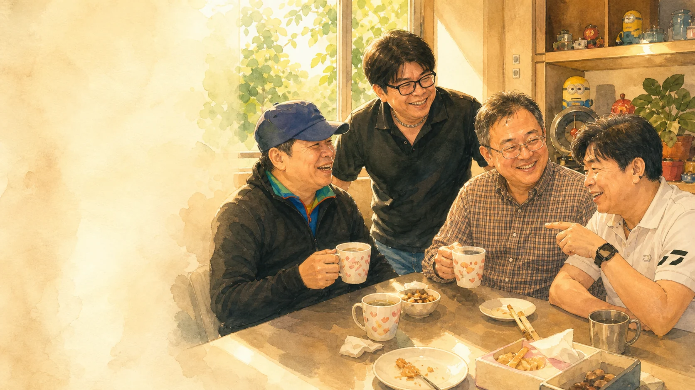

友誼的來處
一張餐桌，
接住了四十多年的時光。
民國七十二年，我們十五歲，帶著青澀與期待進入光武工專。從民國七十九年畢業至今，每個人走出不同的人生路；而今年三月，一場簡單的到家裡聚會，讓久違的同學情誼重新有了固定的節奏。
有時是家常飯菜，有時是外帶餐點；桌上有飲料、零食、咖啡，也有說不完的往事與笑聲。這些看似平凡的小事，因為有老同學陪伴，變得格外珍貴。

友誼的來處
民國七十二年，我們十五歲，帶著青澀與期待進入光武工專。從民國七十九年畢業至今，每個人走出不同的人生路；而今年三月，一場簡單的到家裡聚會，讓久違的同學情誼重新有了固定的節奏。
有時是家常飯菜，有時是外帶餐點；桌上有飲料、零食、咖啡，也有說不完的往事與笑聲。這些看似平凡的小事，因為有老同學陪伴，變得格外珍貴。
近期相聚
照片回憶